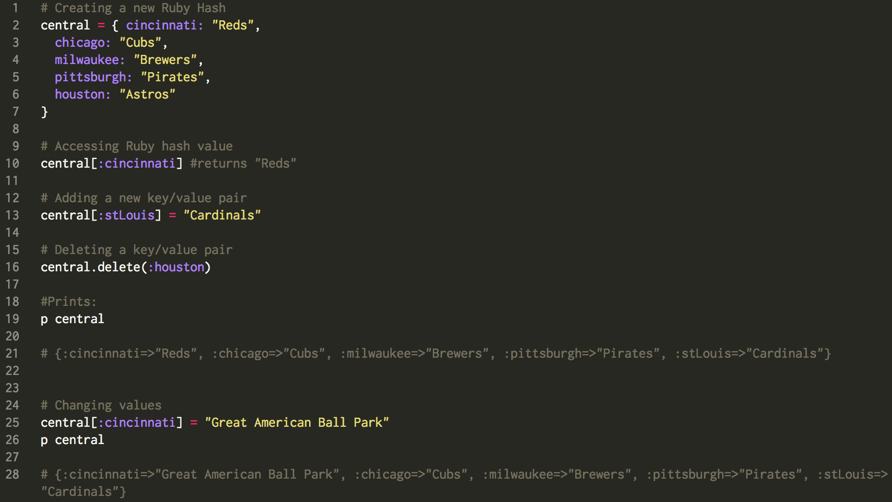
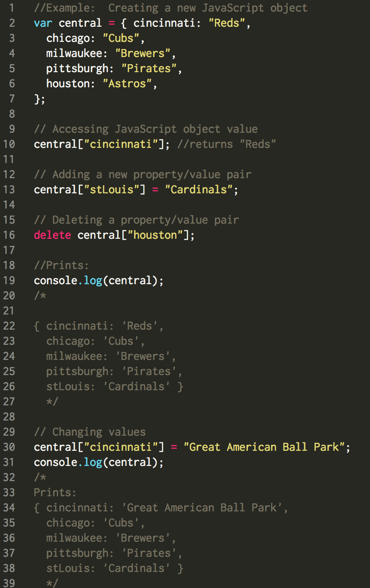

A couple weeks ago I blogged about Arrays and Hashes in Ruby, and explained the difference between the two. After a few intense weeks, we have switched gears and moved on to a new language with some pretty significant similarities to Ruby, and that's JavaScript. In this week's blog I wanted to show an examples of both Ruby Hashes and JavaScript Objects, and show just how similar they are.
In each of these examples below, I have created both a new Ruby Hash and JavaScript Object. I have also added comments above each line of code explaining what it going on. In Ruby, you can comment out code by using a #. In JavaScript, you want to use //.
Ruby.

Pretty cool right? In this example, we have a hash with all the teams currently playing in the National League Central. Well.. kinda. The Astros used to be in the NL Central, before heading over to the American League. Since they are no longer in the Central, we can delete them from our hash by using the code on line 16.
JavaScript.
Now let's take a look at an example of a JavaScript Object:

One difference you may notice right off the bat(no pun intended), is that we had to define the variable "central", by using var. It is also important to note that while Ruby hash keys can be any data type (strings, integers, hashes, etc.), JavaScript object properties can only be variables.